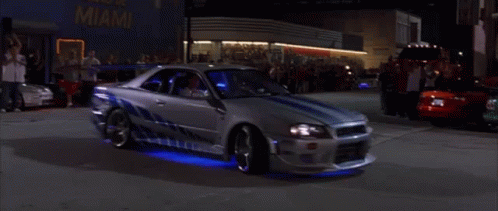
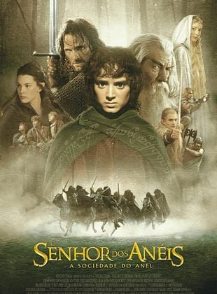

Filmes favoritos
Entre os filmes que assisti os melhores foram velozes e furiosos, Senhor dos anéis e Jumanji
O filme velozes e furiosos

Descrição
O filme Velozes e Furiosos (2001) é um longa de ação focado em corridas de rua ilegais em Los Angeles. Ele segue Brian O'Conner (Paul Walker), um policial disfarçado que se infiltra na gangue de Dominic Toretto (Vin Diesel) para investigar roubos de carga, mas acaba se envolvendo na cultura automotiva e na "família" de Toretto
Ir para trailerJumanji-Bem vindo a selva

Descrição
Em Jumanji: Bem-vindo à Selva (2017), quatro adolescentes em detenção encontram um videogame antigo e são sugados para dentro dele. Eles assumem avatares adultos com habilidades únicas (Dwayne Johnson, Kevin Hart, Jack Black e Karen Gillan) e precisam completar uma missão perigosa na selva para voltar ao mundo real, aprendendo lições de amizade e autoconfiança.
Ir para trailerO Senhor dos Anéis

Descrição
A trilogia cinematográfica O Senhor dos Anéis (2001-2003), dirigida por Peter Jackson, é uma adaptação épica da obra de J.R.R. Tolkien, ambientada na Terra Média. A trama segue o hobbit Frodo Bolseiro em uma jornada perigosa para destruir o "Um Anel" no Monte da Perdição, impedindo o Lorde das Trevas Sauron de dominar o mundo.
Ir para trailer